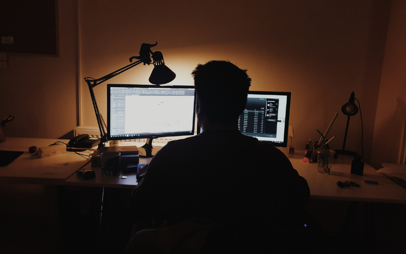

<!DOCTYPE html>
<html lang="en"></html>
<head>
    <meta charset="UTF-8">
    <meta name="viewport" content="width=device-width, initial-scale=1.0">
    <title>About Us - Personal Portfolio</title>
    <link rel="stylesheet" href="styles.css">
</head>
<body>
    <div class="navbar">
        <a href="index.html">Home</a>
        <a href="about.html" class="active">About Me</a>
        <a href="contact.html">Contact</a>
    </div>
    <div class="content">
        <h1>About Me</h1>
        <p>This section contains information about me</p>
    </div>

    <div class="container">
        <div class="image">
            
        </div>
        <div class="text">
            <pre style="font-family: MonoLisa;">
                Jesse Danneck's Portfolio 

    Hello! I'm Jesse Danneck, a 18-year-old student at Mother Merry School in Kigali City,
      currently studying computer programming at Evolvis. My passion for technology drives 
      me to dive deep into programming languages and software development, and I love the challenge 
      of creating and optimizing code.
      In addition to my studies, I'm an active member of the robotics club at school, 
      where I apply my programming skills to build and control robots.
      I also stay engaged with athletics, which keeps me focused and disciplined.

      I’m excited about the future and eager to leverage my skills in computer programming 
      to drive innovation and make a positive impact in my community and beyond.
           </pre>
        </div>
    </div>

</body>
</html>
